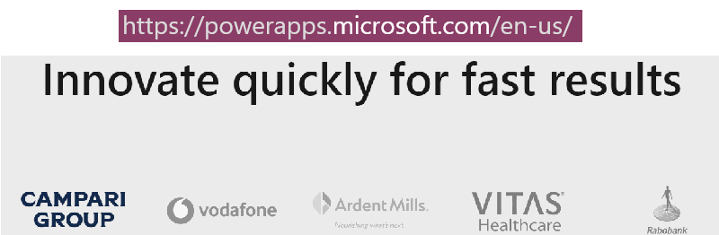
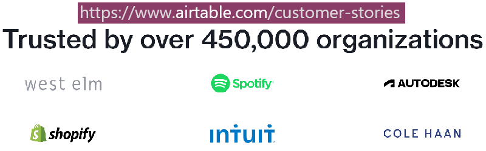

Market: Opportunity/Edge
The Skinny
Opportunity
| Technology | Easy | Fast | Capacity | Customizeable |
|---|---|---|---|---|
| Low-Code | :x: | :x: | :heavy_check_mark: | :heavy_check_mark: |
| No-Code | :heavy_check_mark: | :heavy_check_mark: | :x: | :x: |
Brij |
:heavy_check_mark: | :heavy_check_mark: | :heavy_check_mark: | :heavy_check_mark: |
Edge
- State of the art technology (purely functional language, immutable data)
- Years ahead of other Low-code/No-code vendors (including Microsoft)
- As Easy to Use as a Spreadsheet
- Quick development (just like the No-code offerings)
- Infinite capacity
- Complete customizeability
The Details
To truly understand the technology in focus (especially the No-code systems) please read the background information below.
Document Databases
A document-oriented database, or document store, is a computer program and data storage system designed for storing, retrieving and managing document-oriented information, also known as semi-structured data. Document-oriented databases are one of the main categories of
NoSQLdatabases, and the popularity of the term "document-oriented database" has grown with the use of the termNoSQLitself.source: Wikipedia
A Note about IBM Lotus Notes/Domino
Document Database systems are not new. In the 1990s IBM bought Lotus Notes, which had developed (besides the spreadsheet Lotus 1-2-3) a Document DB called Lotus Notes/Domino.
Soon after IBM bought the product, it invested huge resources into it (In the 90s IBM spent more on research than Microsoft and Oracle combined, and filed for more patents than anyone else in the industry). By the end of the decade over 87% of the S&P 500 were using Notes/Domino.
Lotus Notes/Domino had several state-of-the-art features which were adopted by the software industry much later, including
- Whiteboarding
- Online messaging/group chat/collaboration
- Hyperlinks attachments within email (including to a Database record)
- Database Replication and sharding (using a Pull-Push mechanism)
- Field-level edit history information
- Handshake based Public-Private key Cryptography
- and much more.
However, one thing about this sofware led to it's immediate adoption by corporate America: it's ability to allow Rapid application development (RAD). There was nothing even close to the speed at which a developer could build a Notes/Domino database - not even MS Access or Visual Basic.
IBM Domino had certain limitations: for example, the number of records per table were capped to about 200k. Since this was a low-code RAD system, coders could find ways to avoid this bottleneck: At Fannie Mae, for instance (where the Founder worked as a Senior Consultant) the devs split the table into two - A-M and N-Z - and used code workarounds to get beyond the limit.
A second major limitation of IBM Domino was that it did require coding: today's market would label it a low-code or medium-code Application Development System.
The standard storage mechanism in Domino was a document-database format, the "Notes Storage Facility" (.nsf). The .nsf file normally contained both an application design (the "Notes Template File" (.ntf)) and its associated data. Almost all the successfull no-code solutions in the market today make extensive use of (canned) Templates (some examples).
IBM Domino also used hierarchical Data Views to display user data. This too has been extensively adopted by today's No-Code vendors (some examples).
Today's No-Code systems are almost all modelled on Document Databases in general and IBM Domino in particular.
Brij is also modelled on IBM Domino.
The Founder is an IBM Certified Principal Application Developer (IBM Notes/Domino). He has over 15 years experience working in the industry with almost a dozen S&P 500 companies - household names - and knows Notes/Domino like the back of his hand. The founder's consulting company was an Advanced IBM Business Partner (by invitation only).
When he set out to build a no-code Document Database in 2016, there were many other companies with the same idea: except that from the beginning he intended to build a system which incorporated the best of both worlds: no-code and low-code.
Brij is modelled for RAD (speed of development & ease of use)
Brij allows for IBM Domino-like ease of development. Like the rest of the No-Code systems popular today, Brij will let you set up and use a Database as easily as using a Spreadsheet.
A Note about MongoDB
According to the DB-Engines Ranking of Document Stores by popularity, updated monthly; MongoDB is ranked number one, and is ranked 500% more popular than the next entry in the list: Amazon DynamoDB.
Because of this huge lead MongoDB has, all five major Cloud Database Hosting services offer MongoDB hosting:
- Microsoft Azure
- Google Cloud
- IBM Cloud Databases
- Amazon Web Services
- MongoDB Atlas
Brij uses MongoDB on the back-end
Brij is designed for infinite capacity and total customizeability. The No-Code vendors are directed at startups, app builders, casual users and small business. Their needs are usually small (< 100K records) and easily met with spreadsheet-like apps. Their users can find and use a canned template for their purpose, or use a workaround like using one fieldName to mean another.
Most No-code vendors expect to build you an App for a low-usage scenario. If you need customization, most will sell you Developer Services.
No-Code Vendors who cap usage are of no practical use for Enterprise Clients. On the other side, Low-Code Vendors (like Microsoft AppBuilder) offer the power of customizeablity as well as capacity but need Developers to be able to use their product.
The enterprise market is different. Today's enterprise user needs upto millions of records. They need specific, customizeable and structured data. They have no real solution in today's market which allows these things.
Here is a typical enterprise use-case scenario: (let's assume it's Thomas, VP of Distribution at Acme Corp.)
- Acme corp has a huge IT department and a data warehouse in the cloud.
- Thomas keeps a copy of his department data in an intranet space.
- He does this so that he can run reports whenever he wants (going through the official channels takes much longer)
- Suppose he wants to run some reports for different vendor scenarios.
- The Distribution Data is 800K records.
- If Thomas were to go with no-code they couldn't offer him capacity.
- If Thomas were to go with low-code he'd have to hire one (or more) developers; which lead to budgetary issues (management asks "Why not let IT do it?")
Brijsolves all of Thomas's problems.
Brij offers the best of both worlds.
Brij is unique. There is nothing in the market like it
Why is Brij first to market? Define your technogical edge.
What really makes Brij unique are several technological advances combined in one product. Microsoft LINQ has existed for several years now, and has many legions of fans amongs dotNet coders. However, CSharp does not expose tools to generate LINQ Queries automatically. There are a number of cutting edge technological advances incorporated into Brij which are obscure enough even in the research sphere; and without which it would be impossible for anyone to solve the problems this product resolves.
Here is an example: This open-source product is a Python program which uses GPT-3 to generate SQL Schema and Queries. This is probably one of the most cutting edge tools in its sphere.
The capabilities built into Brij blow this product out of the water. (and no reliance on AI - yet).
Do you have faith in your technological lead?
One thing we did not mention in all previous refernces to the 10x developer claims in this document is this: we believe that the productivity is a direct result of the extensive experience Mike has as a freelancer. After solving any particularly difficult challenge, we usually research the web to see if others have taken a similar approach (for instance, using a different programming language). This validates - or not - independent thinking, and sometimes offers ideas or insights for the future.
Here is an example of our Technological Edge
One core Brij abstraction Mike first developed in 2017 was the mTpl. Over the years he kept improving on it until it became a key ingredient of the system.
INRIA (The French Institute for Research in Computer Science and Automation) is the french firm which has produced OCaml.
Last year we found that a (very theoretically advanced) PhD researcher at INRIA had developed a very similar abstraction to the mTpl in the OCaml programming language, and had written a research paper about it. This has occured independently on both sides, but informs us that we continue to be on the right path. Validation from such a respected source is a feather in our cap.
Is there a market?
There appears to be a mature market for both low and no-code systems; check out the screenshots below:


Given the undeniable lead Brij has in its feature-set, these are our clients for the taking.
Consider:
If you were a SpreadSheet user and
- You could edit the data BUT
- You did not have the ability to change column headers
- You did not have the ability to insert calculated columns
- You could only use canned SpreadSheet templates for your work
...Would you not switch to a product which allowed customization?